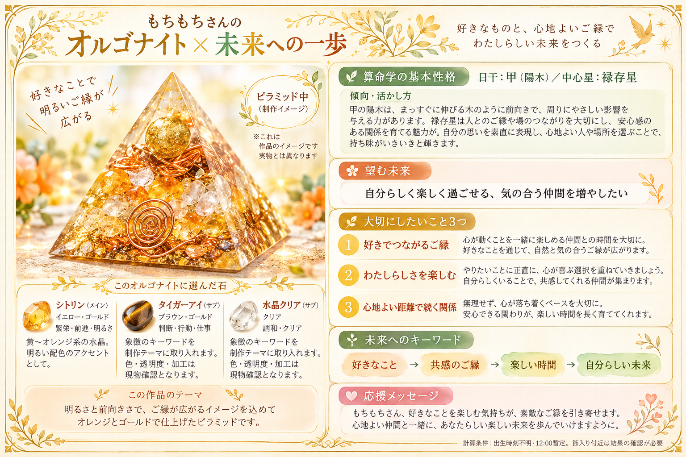
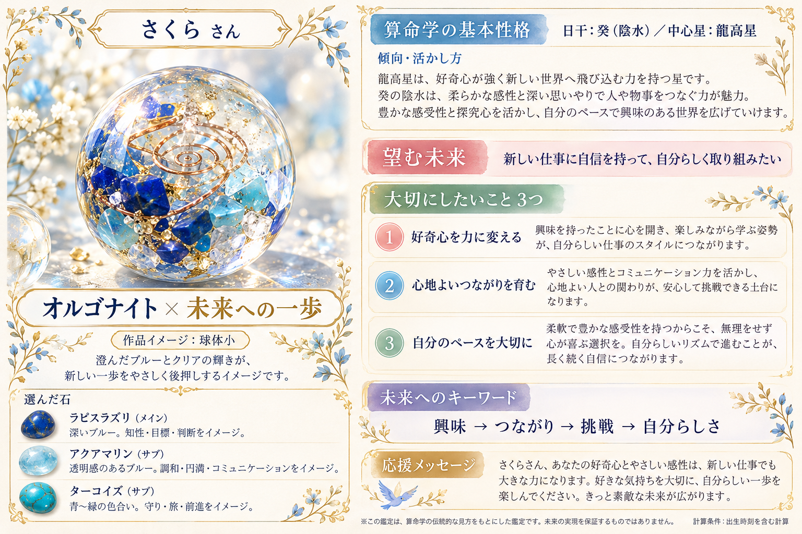
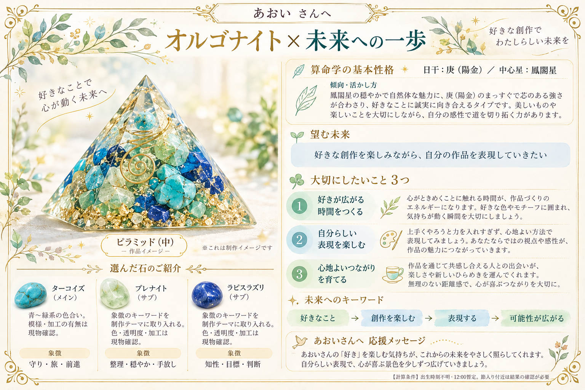
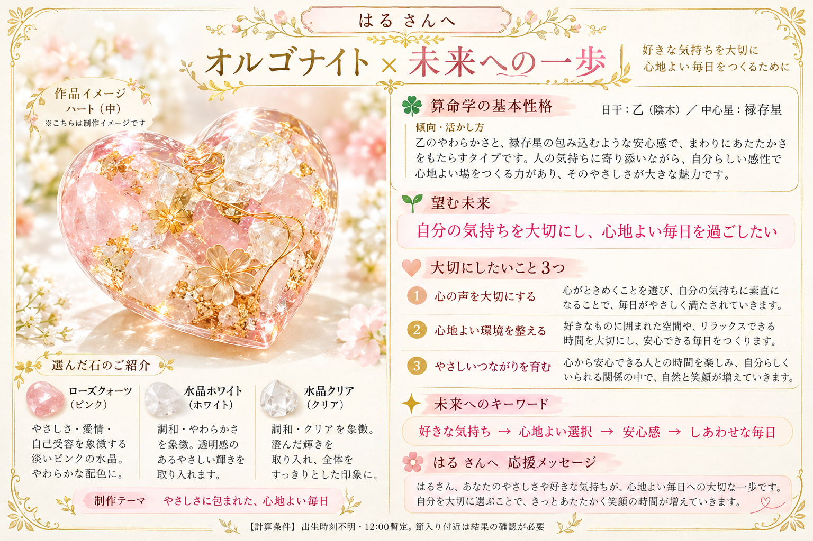
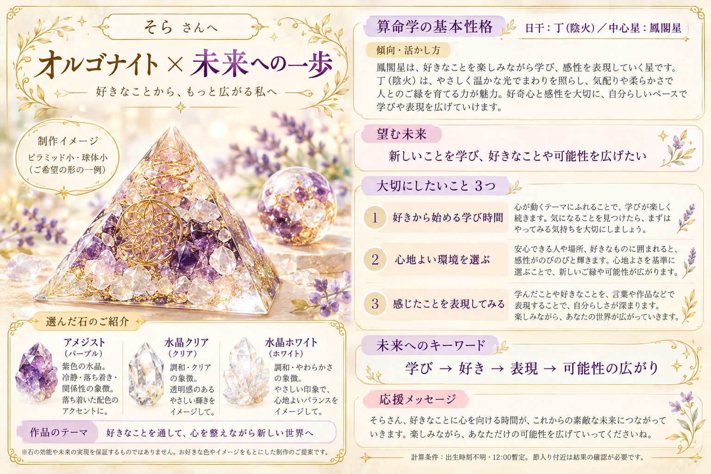

← 制作サポートへ戻る5ケースの実生成チェック
架空のサンプル5件を、サイトが出すプロンプトで実際に生成しました。
5件とも主要項目と前向きな構成を確認。画像をクリックすると拡大できます。枠や細かな配置には違いがあります。
詳しい確認結果／計算・選定原本
もちもちさん：自分らしく楽しく過ごせる、気の合う仲間を増やしたい
日干：甲（陽木）／中心星：禄存星
色：オレンジ、ゴールド／形：ピラミッド中
石：シトリン・タイガーアイ・水晶クリア

確認：オレンジ・金のピラミッド。好きでつながるご縁、自分らしさ、心地よい距離感を提案。応援文の「引き寄せます」はやや強い表現。
サンプル入力
名前：もちもち
生年月日：1987-04-25
望む未来：自分らしく楽しく過ごせる、気の合う仲間を増やしたい
希望色：オレンジ、ゴールド
形：ピラミッド中
実際に使用したプロンプト
さくらさん：新しい仕事に自信を持って、自分らしく取り組みたい
日干：癸（陰水）／中心星：龍高星
色：ブルー、クリア／形：球体小
石：ラピスラズリ・アクアマリン・ターコイズ

確認：球体とブルー・クリア。好奇心、自分のペース、心地よいつながりを仕事に結びつけた。出生時刻を含む計算の注記も一致。
サンプル入力
名前：さくら
生年月日：1992-09-14
出生時刻：09:30
望む未来：新しい仕事に自信を持って、自分らしく取り組みたい
希望色：ブルー、クリア
形：球体小
実際に使用したプロンプト
あおいさん：好きな創作を楽しみながら、自分の作品を表現していきたい
日干：庚（陽金）／中心星：鳳閣星
色：グリーン、ブルー／形：ピラミッド中
石：ターコイズ・プレナイト・ラピスラズリ

確認：グリーン・ブルーのピラミッド。創作を楽しむ、自分らしく表現する視点に個別化。
サンプル入力
名前：あおい
生年月日：1980-12-03
望む未来：好きな創作を楽しみながら、自分の作品を表現していきたい
希望色：グリーン、ブルー
形：ピラミッド中
実際に使用したプロンプト
はるさん：自分の気持ちを大切にし、心地よい毎日を過ごしたい
日干：乙（陰木）／中心星：禄存星
色：ピンク、ホワイト／形：ハート中
石：ローズクォーツ・水晶ホワイト・水晶クリア

確認：ピンク・白のハート。心の声、心地よい環境、やさしい関係を中心にした。
サンプル入力
名前：はる
生年月日：1975-06-18
望む未来：自分の気持ちを大切にし、心地よい毎日を過ごしたい
希望色：ピンク、ホワイト
形：ハート中
実際に使用したプロンプト
そらさん：新しいことを学び、好きなことや可能性を広げたい
日干：丁（陰火）／中心星：鳳閣星
色：パープル、クリア／形：ピラミッド小、球体小
石：アメジスト・水晶クリア・水晶ホワイト

確認：紫・クリア。ピラミッドと球体を両方描き、希望形の一例と表示。学び・好き・表現・可能性の流れ。
サンプル入力
名前：そら
生年月日：2000-01-20
望む未来：新しいことを学び、好きなことや可能性を広げたい
希望色：パープル、クリア
形：ピラミッド小、球体小
実際に使用したプロンプト